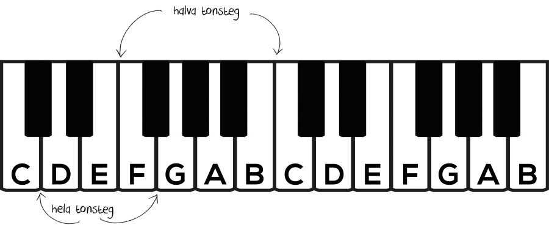
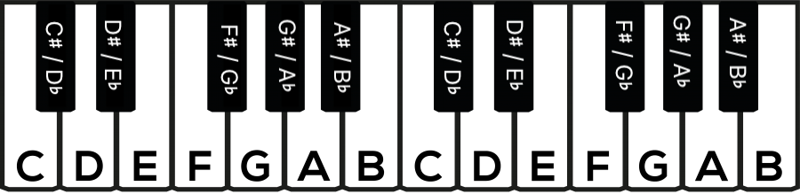

Om du har gått igenom de tidigare delarna och gjort övningarna har du nu en bra grund att bygga vidare på.
I Del 1 lärde du dig tonerna C D E F G A B på pianots vita tangenter. Då lämnade vi de svarta tangenterna till senare.
Nu är det dags att ta reda på vad de heter – och hur vi skriver dem med noter.
De svarta tangenterna

Mellan de flesta vita tangenter finns en svart tangent. Lägg märke till att det inte finns någon svart tangent mellan E och F eller mellan B och C.
Avståndet från en tangent till tangenten närmast bredvid är ett halvt tonsteg – oavsett om tangenten är vit eller svart.
För att höja eller sänka en ton ett halvt tonsteg använder vi förtecken.
Korsförtecken (#)
Ett korsförtecken höjer tonen ett halvt tonsteg. Tonen får ändelsen -iss.
Om vi skriver ett korsförtecken framför C blir det Ciss. På pianot hamnar vi på den svarta tangenten precis till höger om C.
De svarta tangenterna kan med korsförtecken heta:
Ciss, Diss, Fiss, Giss och Aiss
B-förtecken (♭)
Ett b-förtecken sänker tonen ett halvt tonsteg. Tonen får ändelsen -ess.
Om vi skriver ett b-förtecken framför D blir det Dess. På pianot hamnar vi på den svarta tangenten precis till vänster om D.
De svarta tangenterna kan med b-förtecken heta:
Dess, Ess, Gess, Ass och Bess
Vad händer mellan E–F och B–C?
Det finns ingen svart tangent mellan E och F eller mellan B och C. Men regeln är fortfarande densamma: ett kors höjer tonen ett halvt tonsteg och ett b sänker tonen ett halvt tonsteg.
Därför blir:
- Eiss = F
- Fess = E
- Biss = C
- Cess = B
Ett kors- eller b-förtecken behöver alltså inte alltid leda till en svart tangent.
Samma tangent – olika namn
Du har kanske lagt märke till att Ciss och Dess är samma tangent på pianot.
Det beror på att vi kan komma till samma ton på två sätt:
- Om vi höjer C ett halvt tonsteg får vi Ciss.
- Om vi sänker D ett halvt tonsteg får vi Dess.
Samma tangent kan alltså ha olika namn beroende på hur tonen skrivs.

Några exempel:
- Ciss = Dess
- Diss = Ess
- Fiss = Gess
- Giss = Ass
- Aiss = Bess
Återställningstecken (♮)
Ett återställningstecken tar bort ett tidigare kors- eller b-förtecken.
När ett kors- eller b-förtecken skrivs framför en not gäller det för samma ton i samma oktav resten av takten. Vid nästa taktstreck upphör det att gälla.
Bra jobbat!
Nu vet du att ett korsförtecken (♯) höjer en ton ett halvt tonsteg och att ett b-förtecken (♭) sänker den ett halvt tonsteg.
Du vet också att samma tangent på pianot kan ha olika namn, till exempel Ciss och Dess.
Har du koll på kors- och b-förtecken nu?